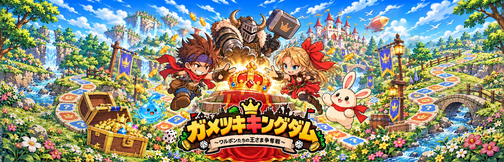

運と判断が交差する盤上
ルートを進み、冒険の先で報酬や勝負に出会う。PVで開発中のゲームプレイをご覧ください。

FANTASY • BOARD GAME • PARTY
ボードゲームの駆け引きと、ファンタジーRPGの冒険。ZAKU ZAKU GAMESが開発中の対戦型ボード・パーティゲーム。
2027年3月2日 発売予定
Steam / Windows 向けに開発中
Steamストアは公開準備中です。公開後にリンクを掲載します。
THE GAME
サイコロを振って盤上を進み、宝箱や戦闘、さまざまな出来事に出会う。個性豊かなキャラクターたちが、ファンタジーの王国を舞台に王さまの座を目指します。
ルートを進み、冒険の先で報酬や勝負に出会う。PVで開発中のゲームプレイをご覧ください。
最大4人での対戦とCPU補充への対応を予定。人数や接続方式は実装・検証を経て確定します。
序章と全6章のシナリオを開発中。キャラクターとの出会いや、カジノを含む多彩なイベントを準備しています。
TRAILER & GALLERY
映像・画像は開発中のものです。内容や仕様は変更される場合があります。
公式PV v21・日本語版 · 63 sec · 720p
オープニング・日本語版 · 1080p
再生ボタンを押すとYouTubeに接続します。再生画質はプレーヤーの設定で変更できます。


PRESS KIT
作品情報と掲載用素材をまとめました。ロゴ、メインビジュアル、PVから切り出した画像をダウンロードできます。
画像・映像は本作の紹介・取材用途向けです。ゲーム本体やソースコードは含まれません。
INDEPENDENT GAME DEVELOPMENT
ZAKU ZAKU GAMESは、ガメツキキングダムを制作する個人ゲーム開発ブランドです。取材・実況・紹介に関するお問い合わせは、広報用メールへお寄せください。
zakuzakugames.press@gmail.com